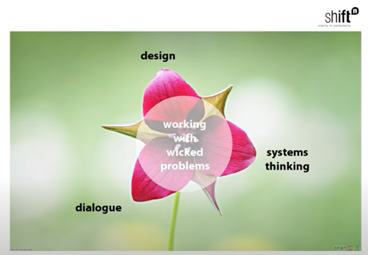

![Thumbnail [200x250]](data:image/svg+xml;charset=UTF-8,%3Csvg%20width%3D%22200%22%20height%3D%22250%22%20xmlns%3D%22http%3A%2F%2Fwww.w3.org%2F2000%2Fsvg%22%20viewBox%3D%220%200%20200%20250%22%20preserveAspectRatio%3D%22none%22%3E%3Cdefs%3E%3Cstyle%20type%3D%22text%2Fcss%22%3E%23holder_185168f5bfa%20text%20%7B%20fill%3A%23eceeef%3Bfont-weight%3Abold%3Bfont-family%3AArial%2C%20Helvetica%2C%20Open%20Sans%2C%20sans-serif%2C%20monospace%3Bfont-size%3A13pt%20%7D%20%3C%2Fstyle%3E%3C%2Fdefs%3E%3Cg%20id%3D%22holder_185168f5bfa%22%3E%3Crect%20width%3D%22200%22%20height%3D%22250%22%20fill%3D%22%2355595c%22%3E%3C%2Frect%3E%3Cg%3E%3Ctext%20x%3D%2256.1805534362793%22%20y%3D%22130.66666679382325%22%3EThumbnail%3C%2Ftext%3E%3C%2Fg%3E%3C%2Fg%3E%3C%2Fsvg%3E)
![Thumbnail [200x250]](data:image/svg+xml;charset=UTF-8,%3Csvg%20width%3D%22200%22%20height%3D%22250%22%20xmlns%3D%22http%3A%2F%2Fwww.w3.org%2F2000%2Fsvg%22%20viewBox%3D%220%200%20200%20250%22%20preserveAspectRatio%3D%22none%22%3E%3Cdefs%3E%3Cstyle%20type%3D%22text%2Fcss%22%3E%23holder_185168f5bf8%20text%20%7B%20fill%3A%23eceeef%3Bfont-weight%3Abold%3Bfont-family%3AArial%2C%20Helvetica%2C%20Open%20Sans%2C%20sans-serif%2C%20monospace%3Bfont-size%3A13pt%20%7D%20%3C%2Fstyle%3E%3C%2Fdefs%3E%3Cg%20id%3D%22holder_185168f5bf8%22%3E%3Crect%20width%3D%22200%22%20height%3D%22250%22%20fill%3D%22%2355595c%22%3E%3C%2Frect%3E%3Cg%3E%3Ctext%20x%3D%2256.1805534362793%22%20y%3D%22130.66666679382325%22%3EThumbnail%3C%2Ftext%3E%3C%2Fg%3E%3C%2Fg%3E%3C%2Fsvg%3E)
Wicked Problems - A General Overview
What is a wicked problem?
A wicked problem is an issue which is extremely difficult to solve as a result of being "ill-defined and reliant on political judgement" (Vandenbroeck 2013, 7:48-7:55). This term was introduced in a 1973 paper titled "Dillemas in a general theory of planning" by Horst W. J. Rittel & Melvin M. Webber and has since been utilized to describe more pervasive problems such as poverty and climate change. Rittel and Webber have also laid out ten characteristics of wicked problems:
- There is no definitive formulation of a wicked problem (7)
- Wicked problems have no stopping rule (8)
- Solutions to wicked problems are not true-or-false, but good-or-bad (8)
- There is no immediate and no ultimate test of a solution to a wicked problem (9)
- Every solution to a wicked problem is a "one-shot operation"; because there is no opportunity to learn by trial-and-error, every attempt counts significantly
- Wicked problems do not have an enumerable (or an exhaustively describable) set of potential solutions, nor is there a well-described set of permissible operations that may be incorporated into the plan (10)
- Every wicked problem is essentially unique (10)
- Every wicked problem can be considered to be a symptom of another problem
- The existence of a discrepancy representing a wicked problem can be explained in numerous ways. The choice of explanation determines the nature of the problem's resolution (12)
- The planner has no right to be wrong (12)
Unlike the more "tame" problems such as "a problem of mathematics" where there is a clear goal in mind and a way to tell if the problem is solved, wicked problems "have neither of these clarifying traits" (6). Instead, wicked problems have the issue of needing the solution to understand the problem (7). As Rittel and Webber state, "every question asking for additional information depends upon the understanding of the problem--and its resolution--at that time. Problem understanding and problem resolution are concomitant to each other. Therefore, in order to anticipate all questions (in order to anticipate all information required for resolution ahead of time), knowledge of all conceivable solutions is required . . . The process of formulating the problem and of conceiving a solution (or re-solution) are identical" (7-8).
Since a wicked problem needs the solution to understand the problem, there is no clear sign in that the problem has been solved (8). As such, attempts on solving a wicked problem stop because of "external" factors (8).
There is no objective way to tell if a solution would work, especially because of "personal interests, special value-sets, and ideological predilections" (8).
If a solution is attempted on a wicked problem, there will be "waves of consequences" over time, and there is no way to tell if all the consequences are shown in a finite time (9).
Trying to solve a wicked problem will change the problem irreversably (9).
Wicked problems have factors that prevent any general solutions from forming (11).
Wicked problems can be seen through a variety of due to one's background, especially since as aforementioned, there is no effective way to objectively test a problem (12).
In solving a wicked problem, there can be potential to great harm (13). As such, planners "are liable for the consequences of the actions they generate" (13).
Approaching Wicked Problems
Despite the daunting characteristics of a wicked problem, some have developed approaches towards dealing with them. Philippe Vandenbroeck, who has over 20 years of experience in approaching complex problems and systems, has illustrated a three point approach of design, dialogue, and systems thinking (Vandenbroeck 2013, 11:59).
Systems thinking enables a way of thinking about the connectivity of wicked problems with respect to who is impacted and helps with trying to define a problem (13:40-13:55). Dialogue is a way of "empathy" which can garner trust, as well as a way of gleaning new information through conversation (14:00-14:38). Design focuses on creating solutions (14:50-15:01).
Sources
Rittel, Horst W. J., and Melvin M. Webber. “Dilemmas in a General Theory of Planning - Policy Sciences.” SpringerLink. Kluwer Academic Publishers, 1973. https://link.springer.com/article/10.1007/BF01405730.
Working with Wicked Problems: Philippe Vandenbroeck at TEDxUHowest. YouTube. TEDxUHowest, 2013. https://www.youtube.com/watch?v=A5P5kDxY3zU.